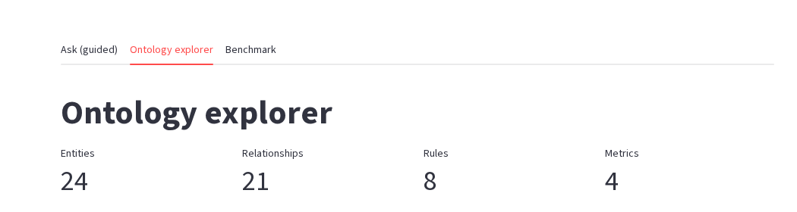
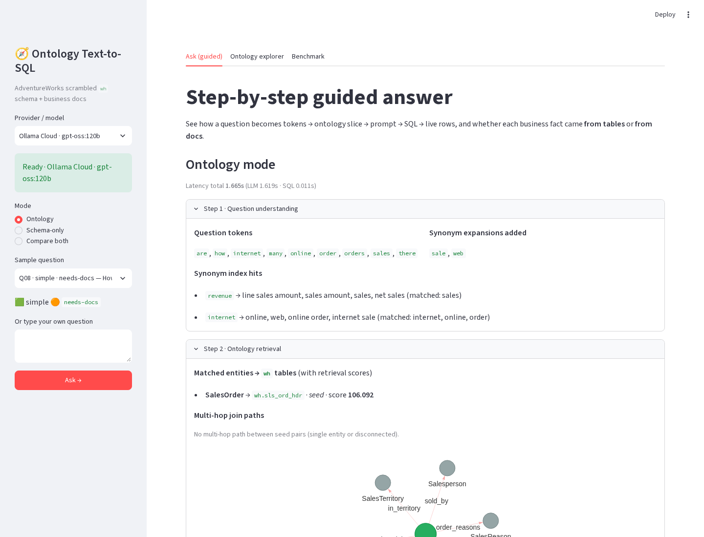
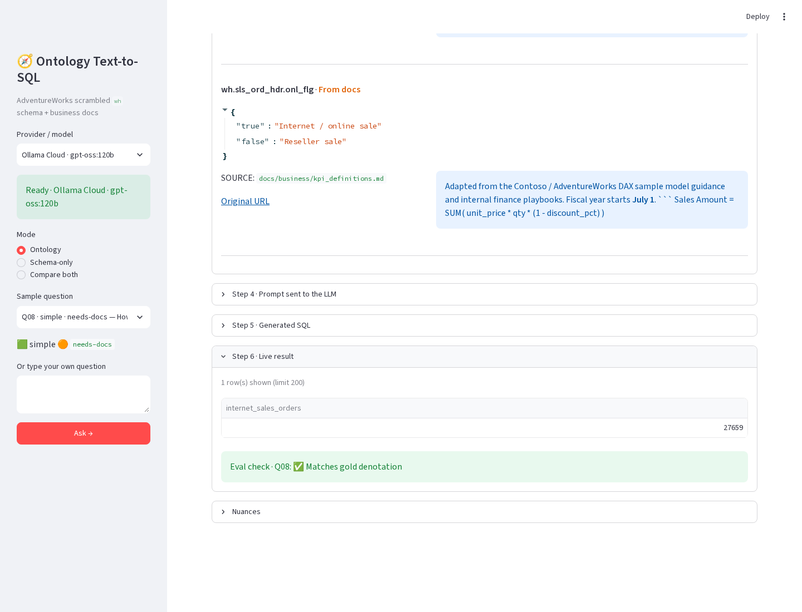
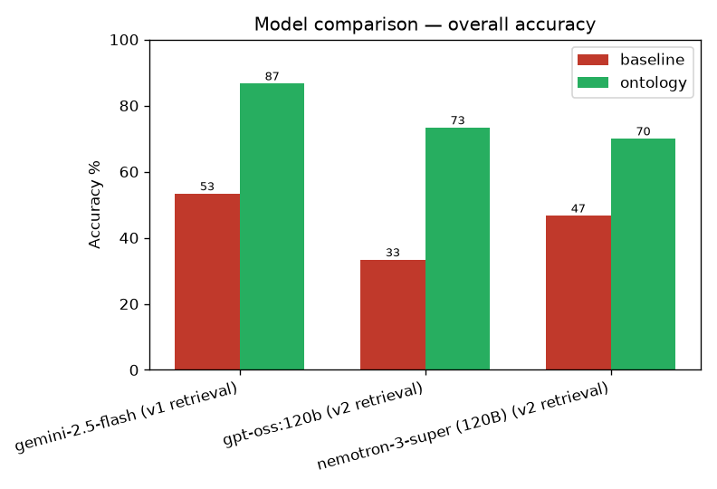
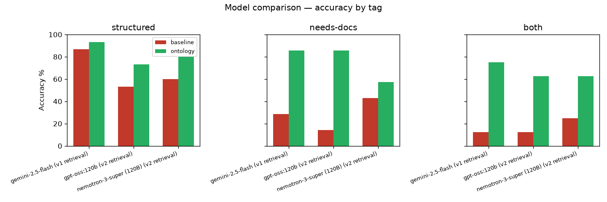
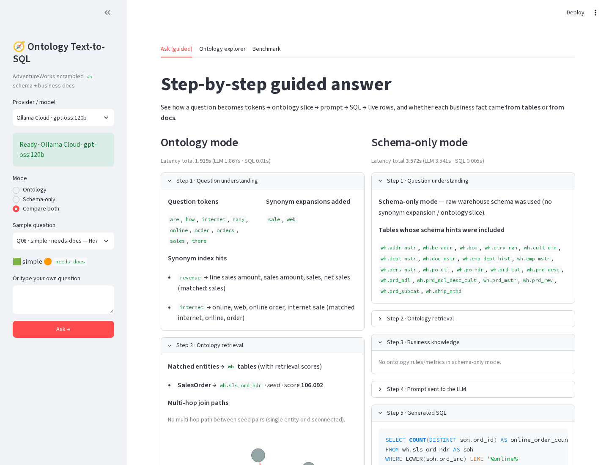

Scrambled warehouse views, business docs, a YAML ontology, retrieval, and a 30 question eval across three models
I have used AdventureWorks for almost a decade. Workshops. Sample warehouses. Late night demos. I could write the joins. I still did not fully understand the business.
Product line codes. A fiscal year that starts in July. Internet versus reseller. Finished goods versus components. Store specialty buried in survey XML.
So I built an ontology for it. Cryptic warehouse names on one side. Business language and docs on the other. Then I asked the same 30 questions with and without that ontology, across three models.
The result: every model with the ontology beat every model without it. The weakest model gained the most.
The project is open source: adventureworks-ontology. Below is the walkthrough so you can build the same pattern on your own data.
Why a schema alone is not enough
AdventureWorks is a classic OLTP sample. The clean Microsoft names are also a problem for Text-to-SQL evals. Models have memorized SalesOrderHeader.OnlineOrderFlag. Give them those names and they answer from memory. You never learn what your ontology actually added.
So I load the real tables into Postgres, then expose a scrambled wh schema. Thirty three views. Same data. Cryptic names.
CREATE OR REPLACE VIEW wh.sls_ord_hdr AS
SELECT
salesorderid AS ord_id,
orderdate AS ord_dt,
status AS stat_cd,
onlineorderflag AS onl_flg,
subtotal AS sub_amt,
totaldue AS net_amt,
...
onlineorderflag becomes onl_flg. finishedgoodsflag becomes fg_flg. The mapping file is for humans debugging gold SQL. It never goes to the LLM.
That is the point. Real warehouses look like this. Your Text-to-SQL stack has to survive it.
Load the data, then profile it
- Start Postgres 16 (
docker compose up -din the repo). - Run
scripts/load_adventureworks.sh. It pulls the official AdventureWorks 2014 CSVs and the MIT Postgres port from lorint/AdventureWorks-for-Postgres. - Apply
sql/01_create_wh_views.sqlto create the scrambled layer. - Run
scripts/profile_schema.py. It readsinformation_schema, samples values, and writesartifacts/schema_profile.json.
The profile records column types, distinct counts, sample values (stat_cd is 1 to 6), and likely join keys. That file is the structured half of the ontology input.
Add the docs the tables cannot tell you
The other half lives in docs/. Markdown files for company rules, product codes, and store surveys. Sources are Microsoft Learn pages plus text and XML exported from the loaded database. docs/SOURCES.md lists every link.
These docs hold rules the columns never state:
- Fiscal year starts July 1. FY2024 runs from 2023-07-01 to 2024-06-30.
- Internet orders have
onl_flg = TRUE. Reseller orders haveonl_flg = FALSE. - Finished goods have
fg_flg = TRUE. - Product line codes: R Road, M Mountain, T Touring, S Standard.
Without those rules, "how many internet orders" is a guessing game over cryptic flags.
Write the ontology as YAML
One file: ontology/ontology.yaml. Six sections. Each answers a question the LLM cannot answer from column names alone.
Entities (24). Business names mapped to tables and columns.
name: SalesOrder
description: A customer purchase order with dates, status, channel flag, and totals.
table: wh.sls_ord_hdr
primary_key: ord_id
attributes:
- name: online_order_flag
column: onl_flg
- name: subtotal
column: sub_amt
synonyms: [order, sales order, purchase, transaction]
Relationships (21). Join paths with exact keys. Provenance is schema because they came from the profile.
name: has_lines
from: SalesOrder
to: SalesOrderLine
join:
left: wh.sls_ord_hdr.ord_id
right: wh.sls_ord_dtl.ord_id
Rules (8). The docs section. Each rule carries a sql_hint, synonyms, and the source file.
name: internet_vs_reseller
description: Online/internet orders have onl_flg = true. Reseller orders have onl_flg = false.
sql_hint: onl_flg = TRUE -- internet; onl_flg = FALSE -- reseller
provenance: docs/business/kpi_definitions.md
Metrics (4). What "revenue" means. Line sales is unit_prc <em> qty </em> (1 - disc_pct). Order subtotal is the header sub_amt. Pick one and stick to it.
Value meanings (9). Decode coded columns. line_cd R/M/T/S means Road, Mountain, Touring, Standard.
Synonyms index (14). Global lookup from user language to ontology terms. "internet" also matches "online", "web", "online order".
You can draft a first pass with scripts/draft_ontology.py. It packs the schema profile and the docs into a prompt and calls whichever LLM your .env names. Review the draft. Curate by hand. Synonyms should be business language, not copies of your eval questions.

Ontology explorer in the Streamlit app: 24 entities, 21 relationships, 8 rules, 4 metrics.
Retrieve a slice, do not dump the whole file
The full YAML is about 18.8k characters. A modern model could swallow all of it. I still retrieve a slice per question.
Why:
- Scale. AdventureWorks has 24 entities. A company ontology has hundreds. The tutorial should teach the pattern that survives.
- Less noise. Irrelevant tables invite wrong joins.
- Explainability. Deterministic retrieval lets the UI show scores and doc sources.
- Cost. Retrieval is free, fast, and stable across runs.
How it works in scripts/ask.py:
- Tokenize the question. Light stemming. Drop stopwords.
- Expand through the synonyms index, but only for distinctive words. "Sales" cannot drag in half the ontology.
- Score every entity with IDF weighting. Rare words count more than common ones. Name hits beat synonym hits.
- Keep top seeds. Anything below 40% of the best score is cut. Max 5 seeds.
- Multi hop BFS fills join bridges, up to 3 hops.
- Rules, metrics, and value meanings make the cut only when the question hits their distinctive words.
For "How many internet sales orders are there?" the slice is just SalesOrder plus the internet_vs_reseller rule. Earlier retrieval pulled eight entities, including PurchaseOrder and WorkOrder. Tighter is better.
A typical ontology prompt is 3.5k to 4.5k characters. The schema only baseline is about 5.5k. Smaller prompt. Higher accuracy.
Be honest about the weakness. Keyword retrieval is brittle with paraphrases. If someone says "ecommerce" and that phrase is missing from synonyms, you miss. Production should move to embeddings, a cheap LLM reranker, and graph traversal. HelixDB and similar graph stores fit that v2 well.
Prompt the model, then run SQL safely
prompts/ask_sql.md fills in the question, the ontology slice as YAML, and schema hints for only the tables in the slice. The model returns SQL only.
scripts/llm.py talks to Ollama (local or Cloud), Gemini, OpenAI, or Anthropic through .env. Swap the key. Keep the ontology. The stack is model agnostic on purpose.
Before anything hits Postgres, the SQL must be a single SELECT or WITH ... SELECT. It runs on a read only session with a 15 second statement_timeout.

Guided ask for Q08. Synonym expansion turns "internet" into online and web. Retrieval lands on SalesOrder → wh.sls_ord_hdr.

Live result for Q08. Value meaning for onl_flg comes from docs. Eval check matches gold.
Evaluate with denotation, not SQL text
Thirty questions. Ten simple, twelve medium, eight complex. Tags: 15 structured, 7 needs docs, 8 both. Gold SQL is hand written against wh. Gold result rows are frozen in eval/gold_results/.
Scoring compares result sets, not SQL strings. Two different queries that return the same data both pass. The tiers are in eval/COMPARISON.md: full bag match, projection match, and numeric bag match. Numbers round to 2 decimals. Strings trim and lowercase.
Each model runs both modes: schema only, and with the ontology.
What the numbers say
Three models. Temperature 0. Same 30 questions.
| Model | Schema only | With ontology | Gain |
|---|---|---|---|
| Gemini 2.5 Flash | 53% | 87% | +34 pp |
| gpt-oss 120B | 33% | 73% | +40 pp |
| Nemotron 3 Super | 47% | 70% | +23 pp |
Gemini's run used an earlier retrieval version. The Ollama models used the tighter IDF retrieval above. The headline does not change either way.

Overall accuracy. Green is ontology. Red is schema only. Every green bar beats every red bar.

By tag. The biggest lift is on needs docs and both, where business rules matter.
The misses are useful too. Q22, Q26, and Q27 fail for every model even with the ontology. Q26 asks for average annual sales from the store survey for Road specialty stores. That needs xpath over an XML column. The ontology says the survey exists. It does not teach the XML shape. That is an ontology gap, not a model gap. Fix the YAML before you chase a bigger model.
Try it in the UI
streamlit run app/app.pyThe Ask tab walks one question step by step: tokens, entity scores, multi hop bridges, rules with From tables versus From docs, the prompt, the SQL, and the live rows. Compare both modes side by side when you want to see the baseline guess next to the ontology answer.

Compare both. Ontology mode retrieves one entity. Schema only mode dumps schema hints for 21 tables and guesses a wrong filter on ord_src.
What I would do next on a real warehouse
- Start with scrambled names or your real cryptic ones. Do not eval on famous clean schemas.
- Write rules with provenance. Every business rule should point at a doc.
- Keep retrieval explainable at first. Move to embeddings plus graph traversal when synonyms stop scaling.
- Score by denotation. Wrong SQL text that returns the right rows is still useful. Right looking SQL that returns the wrong rows is not.
- Treat eval misses as ontology bugs. Q26 taught me more than any chart.
Resources
- Repo: MKcodeshere/adventureworks-ontology
- Postgres port: lorint/AdventureWorks-for-Postgres (MIT)
- Microsoft AdventureWorks OLTP sample: sql-server-samples releases
- Ontology and agent inspiration: HelixDB helix-foundry
Build the ontology. Measure it. Then decide what your warehouse still refuses to tell you.
Need Help Implementing This?
I offer consulting services for Text-to-SQL systems. Let's discuss your requirements.
Schedule a Consultation